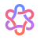

AI Signals
Quiet capture for the team intelligence workspace.
Connection
Connect to AI Signals
Use the same work email as the team dashboard.
Account
Connected to AI Signals
Capture enabled
Extension
Show floating capture button
Keep the Qira capture control available on article pages.